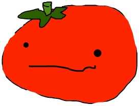

Nix v. Hedden
The Tomato Case.
 More Tomato Facts!
More Tomato Facts!
Tomatoes are the state vegetable of New Jersey. They are the official state fruit of Ohio and tomato juice is the official beverage of Ohio. However, Arkansas took both sides by stating the South Arkansas Vine Ripe Pink Tomato as the state fruit and state vegetable, due to its culinary and botanical classifications.
John Nix was the the founder of John Nix and Co. fruit commission. The Nix brothers were farmers They were the biggest provider of produce at that time in the past and was even one of the first to ship produce from Virginia and Florida.
They sued for getting charged "excess" duties paid for the tomatoes they imported.
Sources
Tomato Recipes E